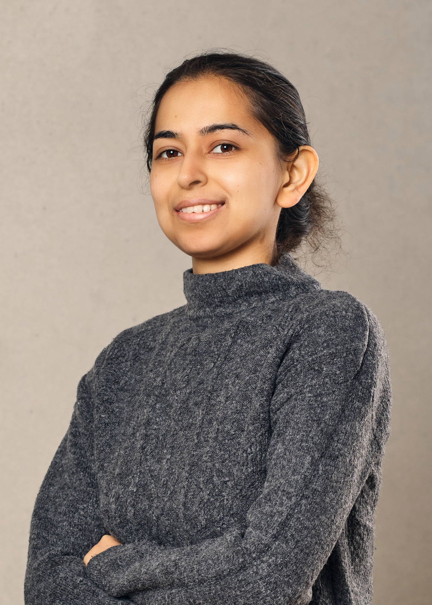

ICCV '25
DuoLoRA: Cycle-consistent and Rank-disentangled Content-Style Personalization
Preserve content and style with two separate low-rank adapters for personalized generation.
Assistant Professor · EECS, York University
I am a professor in the EECS department at York University. I was a Machine Learning Researcher at Qualcomm AI Research. I was a postdoctoral researcher and a Vector Postdoctoral Affiliate in the Vision Group at University of British Columbia advised by Prof. Leonid Sigal and Prof. Kwang Moo Yi. My research at UBC is focussed on diffusion models for high-level as well as low-level computer vision.
I obtained my Ph.D. under the supervision of Prof. Stefan Roth, Ph.D. in the Visual Inference Group, Technische Universität Darmstadt. During my Ph.D., I researched deep generative algorithms for multimodal representation learning and the efficiency of exact inference deep generative models.
I received my M.Sc. from Saarland University where I was a part of the Machine Learning Group and the Max Planck Institute of Informatics.

I am hiring! I have open positions for Postdoctoral Researchers (to start in June), PhD students, and Master's students. If you are interested in working on computer vision and machine learning, please reach out by email with your CV and a brief description of your research interests.
I am interested in computer vision and machine learning, specifically in deep generative models (diffusion models, normalizing flows, variational methods, GANs) for multimodal representation learning.
Preserve content and style with two separate low-rank adapters for personalized generation.

Amortize the entire convergence pathway of a task network for efficient generation and personalization.

Distill the information from a multi-modal LLM to a vision-based end-to-end planner through surrogate tasks.

Inverting the diffusion model to obtain interpretable language prompts, based on the finding that different timesteps of the diffusion process cater to different levels of detail in an image.

We utilize a pre-trained video diffusion model to solve consistency in zero-shot view synthesis.

One can leverage the semantic knowledge within diffusion models to find keypoints across images of a similar kind.

One can leverage the semantic knowledge within diffusion models to find semantic correspondences with prompt optimization.

Sentence-conditioned soft attention over the memories enables effective reference resolution and learns to maintain scene and actor consistency when needed.


A sequential variational framework encoding the style information grounded in images for stylized image captioning.


Our model integrates normalizing flow-based priors for the domain-specific information, allowing us to learn diverse many-to-many mappings between the image and text domains. Best Paper Award, Fraunhofer IGD.

We propose joint Gaussian regularization of the latent representations to ensure coherent cross-modal semantics that generalize across datasets.